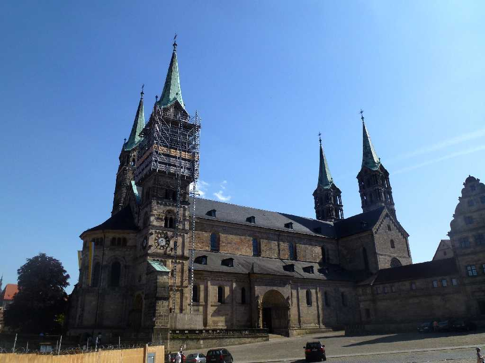
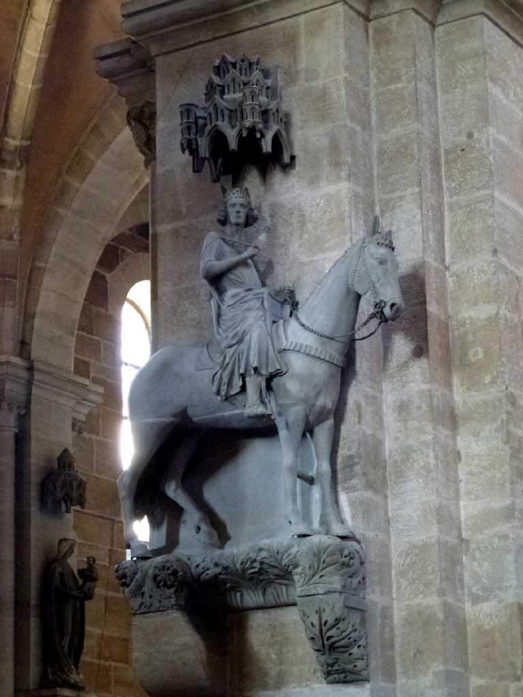
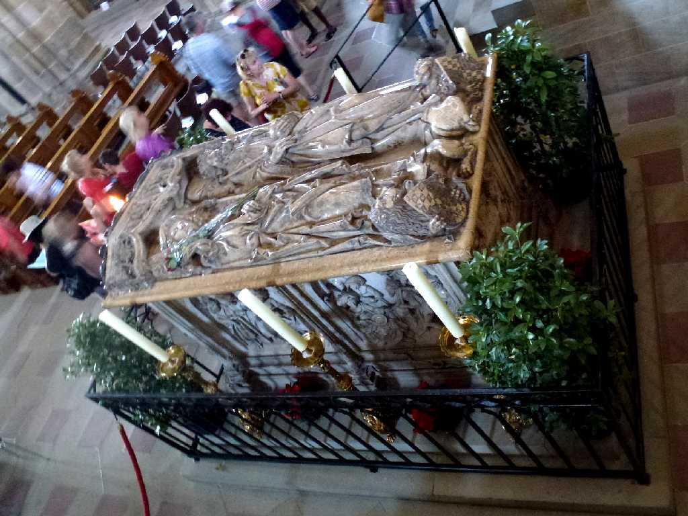
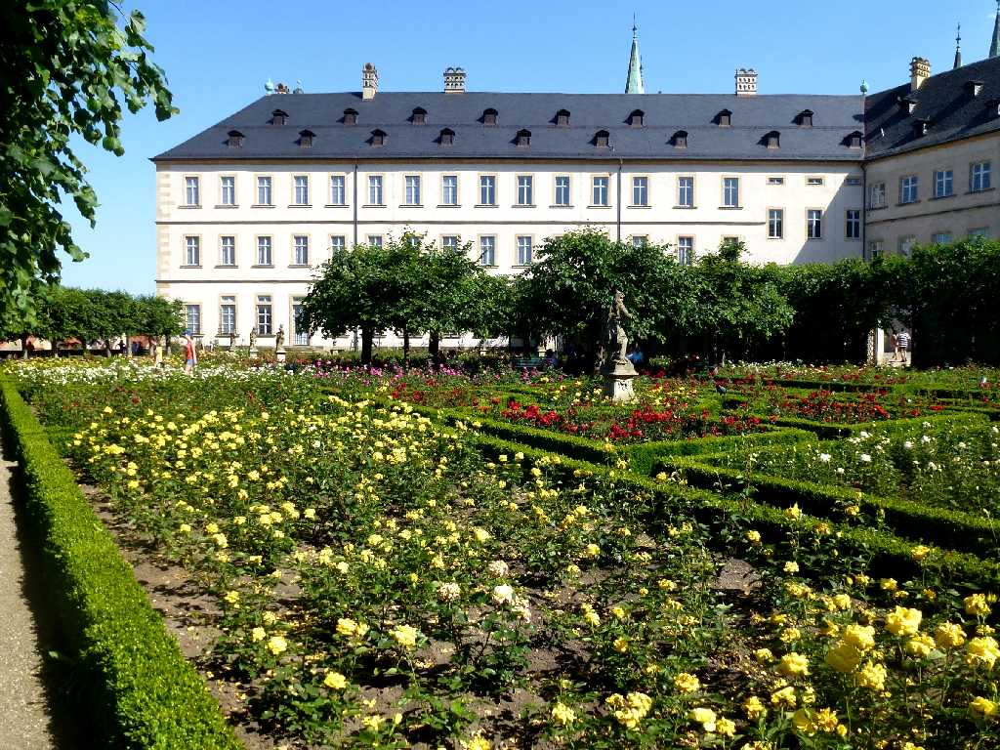
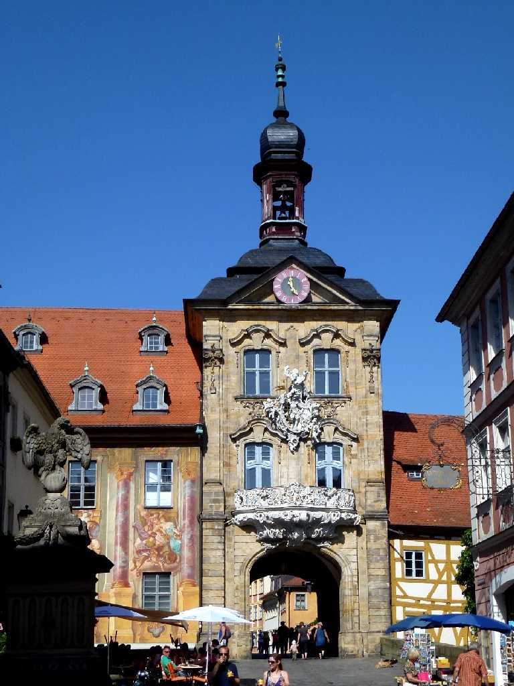
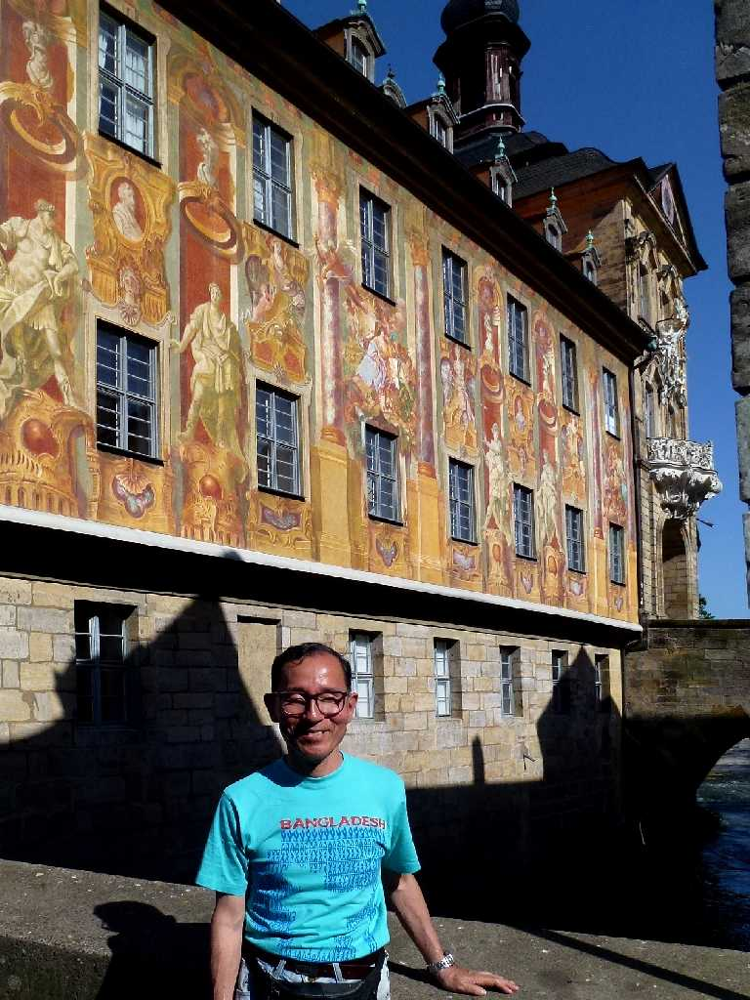

Dom Domplatz Bamberg
皇帝ハインリッヒⅡ世により１０１２年に創れられた大聖堂で１２３７年改築されたロマネスク様式とゴシック様式が融合した４本の鐘楼と２つの祭壇を持つ大聖堂

Bamberger Reiter Dom
１３世紀に創られたバンベルクの騎士像

Kaisergrab Dom
皇帝ハインリッヒⅡ世と王妃が眠っている石棺 １５１３年に創られたドイツルネサンス期の傑作

Rosengarten Neuen Residenz Michelsberg
１６９７年に創られたルネサンスバロック様式の新宮殿とバラ園

Altes Rathaus
レグニッツィ川の中に創られた旧市庁舎で４,０００本の杭によって支えられている

July 9 2014 Altes Rathaus